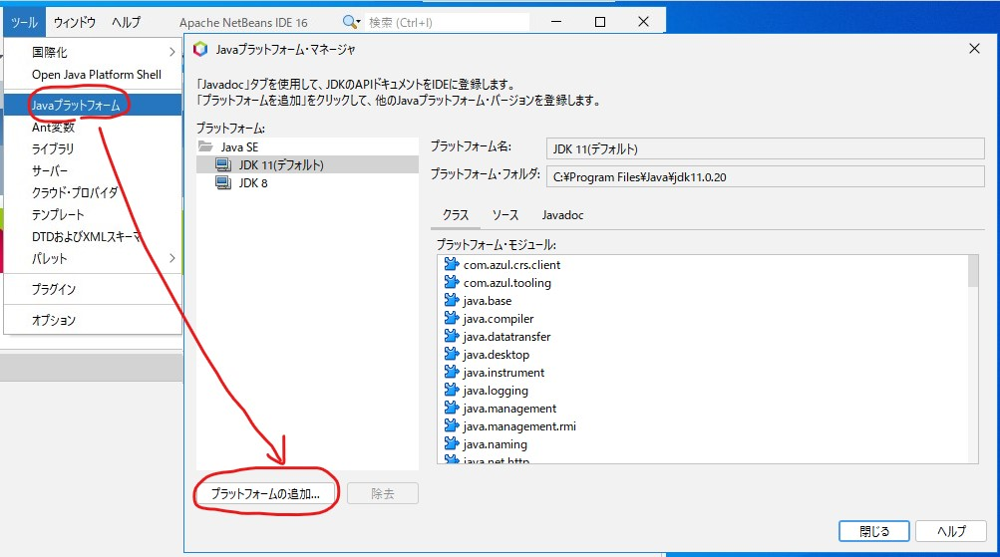
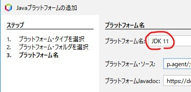
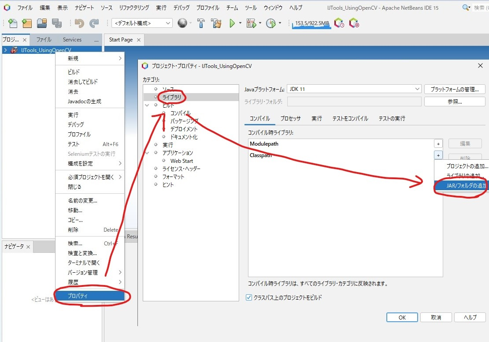
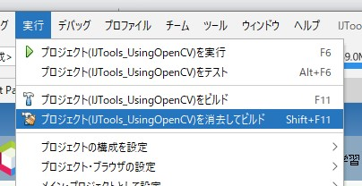
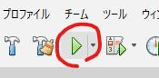
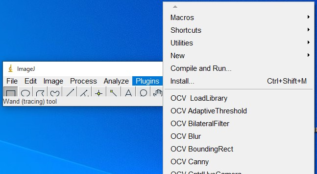

JAVA版のOpenCV4.7.0以降をImageJで扱うには以下の2点の問題がありました。
(1) JDK11以降が必要
ImageJで利用しているのはJDK8です。。。
(2) JAVA9以降で発生する不正なリフレクトアクセス警告
JAVA9以降、プラグイン内で以下の関数を実行するとエラーが発生するようになってしまいました。
System.loadLibrary(Core.NATIVE_LIBRARY_NAME);「WARNING: An illegal reflective access operation has occurred・・・」というエラーが発生してしまうのです。
この2点の問題で右往左往しましたが（古い記事）、JAVA17で問題なく動作することが分かりました。
OpenCV 4.9.0で動作することを確認しました。（2024年1月）
JAVA16・JAVA17あたりで、JAVAのリフレクションの仕様が変わったようです。
ij.jarについて
最新の「ij.jar」であれば、Java17で起動することが可能です。ただし、「ImageJ.exe」からは起動できません。
ImageJ.batを以下の内容で作成し（JDK17のbinフォルダのパスを環境変数PATHに追加して下さい）、batファイルで起動してください。
start javaw -jar ij.jar全ての機能が正常動作するかを、確認したわけではありません。注意してください。
こちらの記事を参考にして、「Launch4j」でImageJ.exeを作成するのも良いかもしれません。
最近、他のインストーラ、OSのアップデートのせいで参照するJavaのバージョンがよく変わってしまいます。
環境変数PATHの先頭に以下のようなパスが。。。
C:\Program Files\Eclipse Adoptium\jre-8.0.392.8-hotspot\binこれではJava8で起動してしまいます。私は削除してしまいます。（心配であれば一番下に移動しましょう。）
NetBeansによるビルド時の設定
私の自作プラグイン「IJToolsUsingOpenCV」のビルド方法を例に説明します。
こちらの「master」ブランチの0.9.41.0以降をダウンロードしてください。（0.9.101.0は使わないでください）
NetBeansがプロジェクトを管理するフォルダに展開したフォルダをコピーします。
（インポートも可能です）
フォルダのルートに「ij.jar」と、「opencv-000.jar」「opencv_java000.dll」をコピーします。
NetBeansを起動します。
NetBeansのプラットホームに「JDK[空白]17」が必要なので、無い場合は作成します。
ツール ⇒ Javaプラットホーム ⇒ 追加

最後のプラットホーム名を「JDK[空白]17」にします。以下の画像では11になってますが。。。

ファイル ⇒ プロジェクトを開く ⇒ 展開したフォルダ選択します。
プロパティを編集します。
まず、ライブラリで「ij.jar」「opencv-000.jar」を追加します。

実行⇒プロジェクトを消去してビルド

正常にビルドできれば、IJToolsUsingOpenCVプラグインが作成されます。
で実行します。

とりあえず、OpenCV4.7.0以降をImageJで利用することができそうです。
こちらのバージョン0.9.41.以上のバイナリーを利用することも可能です。（0.9.101.0は使わないでください）